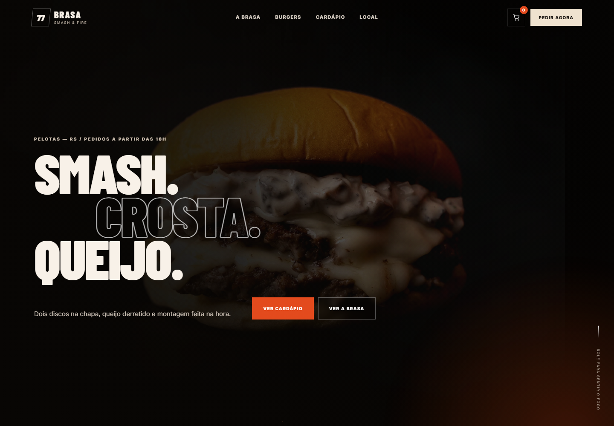
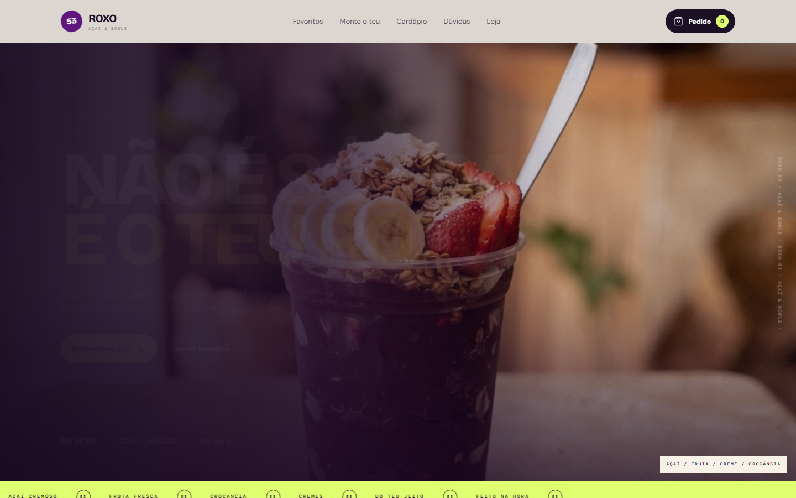
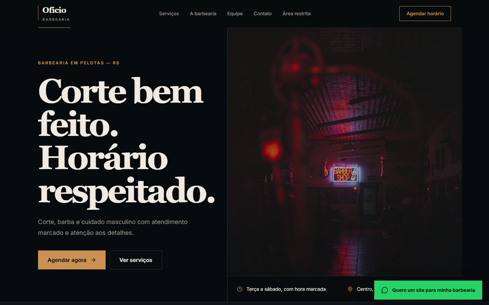
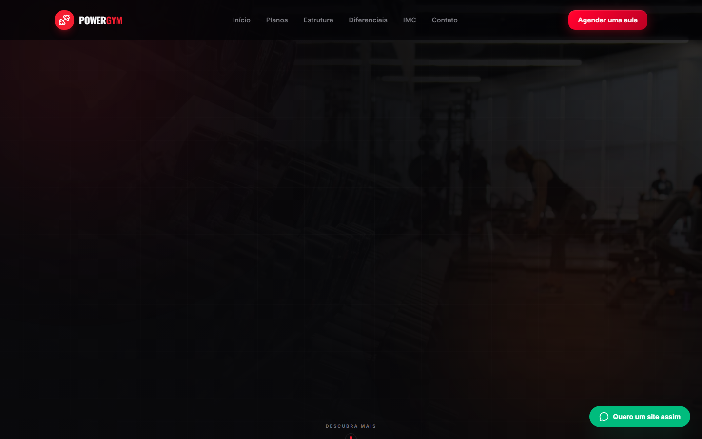

01 / HAMBURGUERIAPELOTAS · RS
Abrir projeto ↗01
Brasa 77
Experiência gastronômica com direção cinematográfica, cardápio interativo, carrinho e fluxo de pedido.
VER SITE↗- FOCO
- Presença + pedido
- STACK
- HTML / CSS / JS
- EXPERIÊNCIA
- Desktop + mobile
Crio experiências digitais rápidas, responsivas e pensadas para transformar atenção em contato, pedido ou agendamento.


01 / PORTFÓLIO SELECIONADO
Cada projeto parte de um problema comercial diferente e recebe uma linguagem visual própria. O ponto em comum é clareza, presença e experiência responsiva.
Experiência gastronômica com direção cinematográfica, cardápio interativo, carrinho e fluxo de pedido.
VER SITE↗Cardápio, montagem personalizada, carrinho, retirada ou delivery e pedido organizado pelo WhatsApp.
VER SITE↗
Abrir projeto ↗Plataforma comercial com agendamento, disponibilidade por profissional e áreas de gestão.
VER SITE↗
Abrir projeto ↗Site comercial para apresentar planos, estrutura, diferenciais, calculadora de IMC e contato direto.
VER SITE↗02 / O QUE EU FAÇO
O visual importa, mas o objetivo é fazer o visitante entender rápido o negócio e saber exatamente qual é o próximo passo.
Presença digital profissional para apresentar negócio, serviços, diferenciais e facilitar novos contatos.
Páginas focadas em uma oferta, campanha ou serviço, com hierarquia e chamadas pensadas para conversão.
Catálogo, personalização, carrinho e pedido organizado direto para o WhatsApp.
Fluxos de horário e atendimento para negócios que trabalham com agenda e profissionais.
03 / COMO EU PENSO
Eu parto do negócio, não de um template. Estrutura, visual, conteúdo e chamadas são definidos de acordo com o que o visitante precisa entender e fazer.
O objetivo é simples: deixar a marca mais confiável, a oferta mais clara e o contato mais fácil.
Ver meu GitHub ↗04 / PROCESSO
Sem etapas nebulosas. O projeto avança com objetivo, escopo e decisões visuais claras.
Você me conta sobre o negócio, objetivo e o que precisa no site.
Definimos escopo, estrutura, referências, funcionalidades, prazo e valor.
Construo a experiência e você acompanha as principais etapas do projeto.
Revisamos desktop e mobile, ajustamos detalhes e deixamos a versão final no ar.
05 / YAGHO SITES
Sou Yagho, desenvolvedor por trás da Yagho Sites. Crio experiências digitais para negócios que querem sair do improviso e se apresentar com mais presença na internet.
06 / DÚVIDAS
Depende do escopo. Uma landing page é mais rápida; projetos com cardápio, agendamento ou fluxos personalizados exigem mais etapas. O prazo é definido antes de começar.
Sim. Os projetos são pensados para desktop e mobile, com atenção especial à experiência em telas menores.
Sim. Posso deixar o projeto publicado e orientar sobre domínio, hospedagem e o que precisa ser mantido depois.
Sim. As demos do portfólio podem servir como referência, mas identidade, conteúdo, produtos e funcionalidades são adaptados para o negócio.
07 / COMEÇAR UM PROJETO
Me conta o que você precisa. Eu analiso a ideia e te digo a melhor forma de transformar isso em um projeto profissional.
Falar no WhatsApp↗